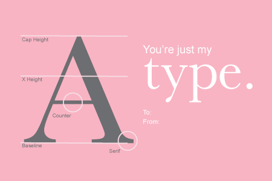

History of Valentine's Day
Roman Holiday
Valentine's Day originated from an old Roman Festival known as Lupercalia, celebrated on February 15. In order to “Christianize” the pagan celebration, placed the St. Valentine’s feast day in the middle of February to commemorate the death or burial of St. Valentine in around 270 A.D. Lupercalia became outlawed in the 5th century and Pope Gelasius declared February 14 as St. Valentine’s Day.
Rise of Valentine's Day
During the Middle Ages, it was commonly believed that in France and England that February 14 was the beginning of bird mating season. It Geoffrey Chaucer that popularized the connection between Valentine’s Day and romance. And eventually, the idea of Valentine’s Day and romance became connected. A century later, Shakespeare wrote about Valentine’s Day in his work which further popularized the holiday.
Commerciallization
Around the 18th century, exchanging love notes on Valentine’s Day became extremely popular. It was first hand made, but as popularity grew, it became commercialized. The tradition spread to America and Esther A. Howland thought it was a good way to make money after receiving a Valentine and began mass producing them in the 1850s. As time went on, Valentine’s Day became a larger and larger Hallmark holiday, making the industry millions of dollars each year.
Time Till Valentine's Day
There are till the next Valentine's Day!
Here is a Valentine's card to prepare you
